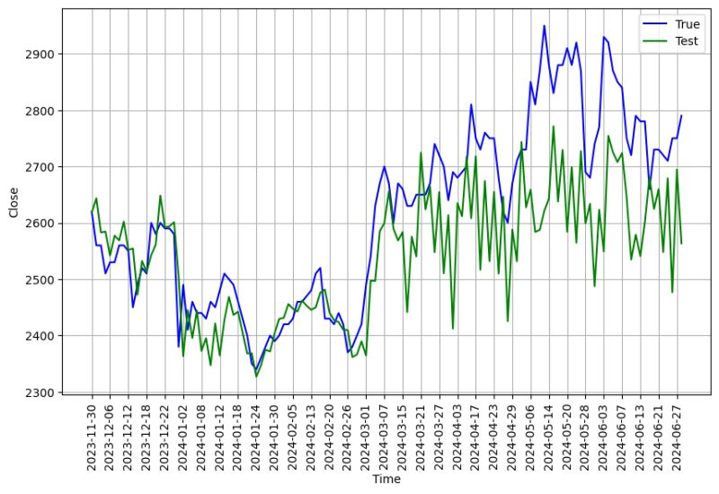

KHAIRULLAH ILYAS | DATA SCIENTIST | DATA ANALYST | AI/ML ENGINEER
Technical Skills: Python, SQL, HTML, CSS, Dashboarding, Machine Learning, Natural Language Processing
Projects
These projects not only demonstrate a technical understanding
of various techniques but also focus on solving real-world problems.
Each project includes a link to a file containing the full analysis.
By addressing unique problem areas and leveraging diverse tools and
frameworks, these projects cover a wide range of challenges—from predictive
analytics to exploratory data analysis. Using the power of Python,
they aim to derive actionable insights and deliver practical solutions.
Within this portfolio, you'll discover
- Data Preprocessing: Performing cleaning, transforming, and preparing raw data to ensure it is suitable for analysis and modeling.
- Exploratory Data Analysis: Insights derived from visualizations and statistical summaries to uncover patterns, trends, and potential anomalies in the data.
- Model Development and Tuning: Utilize some frameworks for building machine learning models, selecting appropriate algorithms, and fine-tuning hyperparameters to optimize performance.
- Model Evaluation: Rigorous assessment of model accuracy, precision, recall, and other metrics to ensure robust and reliable predictions.
- Documentation: Comprehensive notes and explanations detailing the methodology, findings, and key takeaways for each project.
Each project is a testament to my dedication to data science and my ability to apply theoretical knowledge to practical scenarios.
I have meticulously documented each step of the process, from data preprocessing to model evaluation, ensuring that the insights gained are both actionable and understandable.
- Analyzed customer credit risks for lending companies, resulting in increase in decision accuracy through comprehensive data processing
of credit history, demographics, income, and payment experience.
- Processed data by handling missing values, standardizing formats, handling imbalance classs, and conducting exploratory data analysis,
increase in data quality for subsequent projects.
- Trained a machine learning model using refined training data, achieving a model accuracy improvement of 16%.

- Perform ETL data from website and perform data preprocessing on sequential data so that it can be used in model training.
- Developed a neural network model so that it can predict tomorrow's stock price, achieving a root mean squared error (RMSE) of 126.08.

- Used Convolutional Neural Networks to classify Rock-Paper-Scissor hand sign.
- Implementing image augmentation to help the model learn more robust features and rely less on specific details of a particular image, thereby reducing the chance of overfitting.
Feedback from assesor:
- Well done! The submission you sent has a train accuracy of 98% and a validation accuracy of 97%. This shows that the model is a good fit. Keep up the good work!
- You have implemented two suggestions that were not in the Dicoding material, namely callbacks, and model training visualization plots.
- You can also evaluate the model that has been created using the confusion matrix and classification report.
For more information about each project (description and code), click on the pictures below.
Education
Bachelor of Chemical Engineering
Universitas Gadjah Mada, 2019 - 2023
GPA: 3.41
- Thesis: "Preliminary Design of Melamine Formaldehyde Resin Plant from Melamine and Formaldehyde with Capacity of 40,000 Tons/Year"
- Relevant Coursework: Numerical Methods (Grade : A/B), Mathematics (Grade : A-), Computation Laboratory Work (Grade : A), Mathematical
Modelling (Grade : A-), Advanced Computer Programming and Machine Learning (Grade : A)
- Publication: Numerical Investigation of Hydrodynamics in Inline Mixers (2023). DOI: here
- Extracurricular Activities: Media and Design Bureau of the Chemical Engineering Moslem Family
- Achievements: Finalist of National Paper and Poster Competition of APECX (Annual Petroleum Competition and Exhibition) 2021